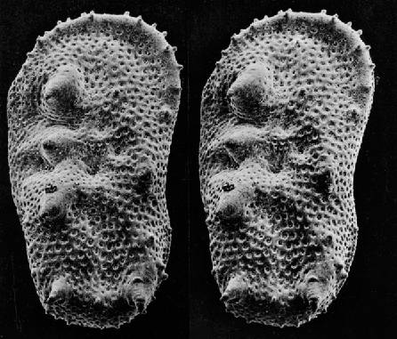
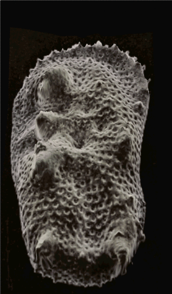

Analysis of a Porous Surface
Surface Analysis
Rainier Barrett and Eric Holmgren
April 27, 2017
The Surface

Goals
- Determine average pore size.
- Image the profile of the pore walls.
- Determine chemical composition of the pore walls.
Pore Size Analysis
SEM Tomography and Image Processing
SEM: Working Principles
- Fire a focused beam of electrons at surface, observe what comes back.
- Different observations for different modes: backscattered electrons, secondary electrons, and light.
- Each mode has a different interaction volume, which determines resolution.
Procedure
- Scan large area of surface with secondary electron mode.
- Perform image processing on resultant images to get a distribution of pore sizes.
- Analyze pore size statistics, specifically mean diameter.
Why SEM?
- SEM can take a scan of a large area of the sample.
- Image or series of images can be analyzed quickly with image processing software.
- Through the use of secondary electron mode, we can specifically image the surface, making image processing even easier.
- Overall, these features allow for a high-throughput, easily repeatable analysis method that generalizes to any porous surface.
Possible Alternatives
- AFM: if pores are extremely small and surface is otherwise relatively flat, AFM in tapping mode could be used, but not optimal.
- Confocal microscopy: it is possible to observe nm-scale images with confocal microscopy, but if the pores are of a smaller scale than this, it won't have the resolution we desire.
Pore Wall Profile Imaging
Angle Resolved SEM and Photogrammetry
Angle Resolved SEM
- Use SEM to find large target pore
- Angle electron beam to see inside of pore
- Set angle that will maximize projected area of pore wall surface
- Scan pore wall with electron beam
- Collect secondary electrons to obtain topographical information
Angle Resolved SEM
- This technique does not require a physical tip
- High resolution
- Angled beam can scan surface inside of exposed pore
Photogrammetry
- Images taken at slightly different angles
- Software uses feature recognition and relative displacement between images
- Three dimensional model is formed
Photogrammetry
 Etching
- Use ion etching to remove a section of the porous surface
- Allows better angle for SEM imaging of exposed pore wall
Etching: Possible Problems
- Debris on newly exposed surface
- Damage to surface structure
Pore Wall Chemical Composition
Angle-Resolved AES and Ion-Sputtering MS
AES: Working Principles
- Auger Electron Spectroscopy (AES): similar principle to SEM, but measures Auger electron kinetic energies.
- Incoming electrons displace inner-shell electrons of sample, which are replaced by nearby ones, sometimes resulting in ejection of a valence-shell electron.
- Auger electrons have a kinetic energy characteristic to the chemical species of the nucleus.
Ion-Sputtering MS: Working Principles
- Mass Spectroscopy needs ions to analyze mass/charge ratios to help determine chemical identities.
- Ion-Sputtering: ion beam is fired at the surface, causing a release of secondary ions which are then accelerated and analyzed.
Procedure
- Perform AES on unaltered surface at several angles.
- Use ion-sputtering MS to analyze the surface and etch a hole deep enough to perform further AES on pore walls.
- Perform AES on the pore walls and compare with results from step 1.
Why AR-AES and Ion-Sputtering MS?
- By using AR-AES, we can directly compare the chemical compositions of the surface (low angle of incidence) with the pore walls.
- Combined with Ion-Sputtering, we can cross-validate chemical identities.
- Ion sputtering allows etching of the surface, allowing angle-resolved access to a cross-section of the pore walls.
- These techniques can be done in tandem in a single machine run, given the equipment.